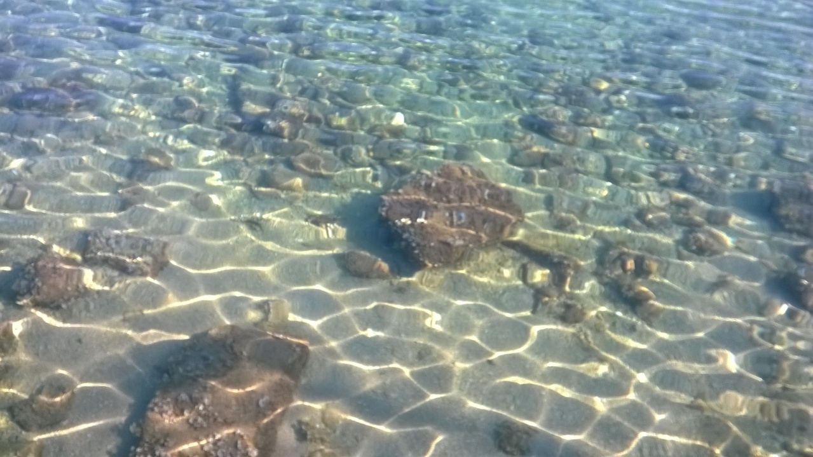
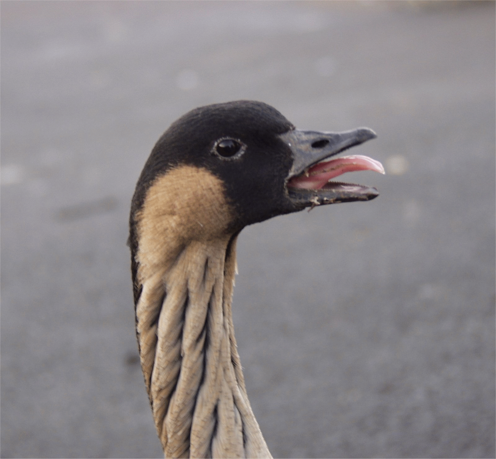
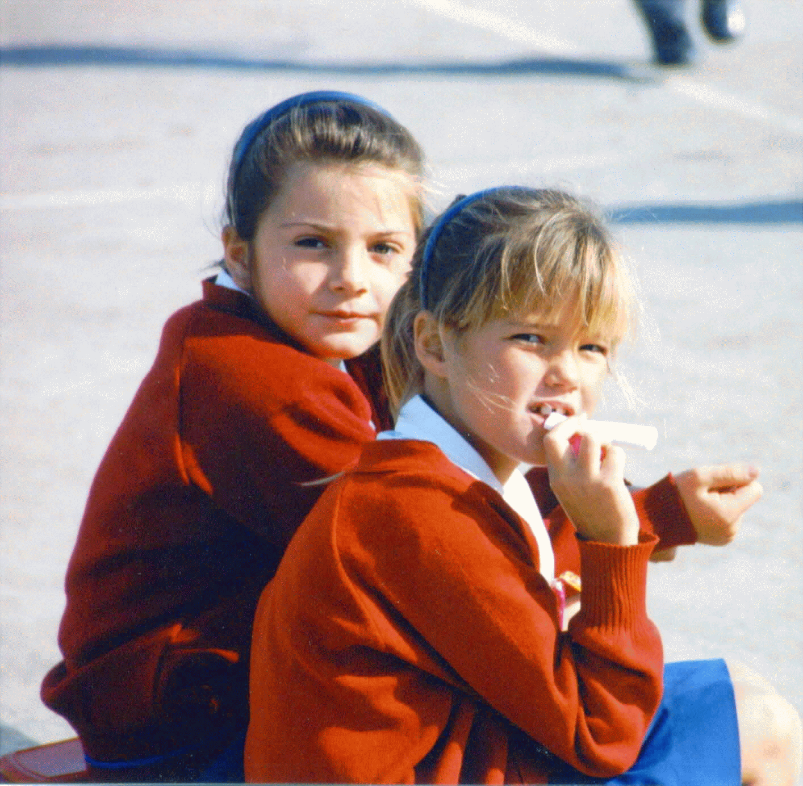

PREVENÇÃO REALIZADA
COM ORGANIZAÇÃO E AMOR
COM ORGANIZAÇÃO E AMOR
O Grupo PROA (Prevenção Realizada com Organização e Amor) iniciou suas atividades em abril de 1998, na Comunidade do Morro dos Prazeres,
no bairro de Santa Teresa, Rio de Janeiro, quando um grupo de amigos decidiu convencer os moradores da importância de se protegerem contra doenças
sexualmente transmissíveis (DSTs). Munidos de um caderno com fotos e informações sobre DSTs, começaram a distribuir preservativos e a realizar um trabalho
de conscientização e educação sexual. O PROA estabeleceu uma parceria - que se fortalece a cada ano - com a Unidade de Saúde local a fim de difundir
informações sobre seus programas sanitários. Com mais de 18 anos de muito trabalho, o grupo segue inovando na busca de temas para os encontros, nas formas
de aconselhamento e capacitação, além da participação em movimentos sociais a fim de fortalecer as parecerias para melhorar a vida dos moradores da
comunidade.

passeios
reciclação
caminho do graffiti
clube jovem
brigada mirim
encontros de sensibilização
jardim dos prazeres
camelô educativo
renovação de vidas
Encontros de sensibilização
São encontros acolhedores com grupos de homens, mulheres, adolescentes, jovens mães para falar de assuntos como: uso da camisinha,
responsabilidade paterna, o aborto e suas consequências, DST/HIV-Aids, drogas, vida escolar, mercado de trabalho e outras demandas que a
Comunidade sugerir.
MÍDIA
ReciclAção 2016

Aquela Conversa:
Meu Ambiente, MultiRio
Aquela Conversa:
Meu Ambiente, MultiRio

Projeto promove igualdade de gênero entre beneficiários do Bolsa Família, Agência Brasil
Projeto promove igualdade de gênero entre beneficiários do Bolsa Família, Agência Brasil